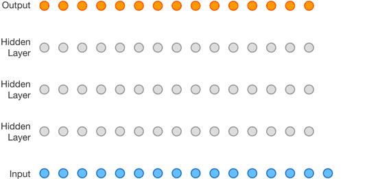

漫谈序列编码：MLP、CNN、RNN
漫谈序列编码：MLP、CNN、RNN
在深度学习中，很多时候要处理的是表示问题，例如在 NLP 中，把变长的句子进行结构化表示，如定长的向量或矩阵，这个过程我们称为句子的表示。有趣的事情是，我们都似乎热衷于模拟人脑，从多层感知机、CNN到RNN，这些都是在某个方面模拟人脑。注意力机制也不例外，尝试对人类的主动性注意力中做模拟。当然，随着这些模型的复杂运用，这些模拟是否真的按照人们所理解的那样工作就不得而知了，例如现在的Transformer，从细节上看，及其复杂，它真的按照人类对其设计之初的初期工作？。但无论如何，目前Attention在各个领域取得的成就是让人瞩目的。为此，开本系列计划总结或者说漫谈一下注意力机制。本篇我先梳理一下在注意力机制出现前的序列编码问题。
序列编码问题
假定我们有一序列样本，
其中每个时间步 $\boldsymbol{x}_{i}$ 是一个向量，k 是一个正整数，表示不定长序列的长度。一般序列类型数据有如下特点，
- 变长，即序列长度不定
- 长距离的模式依赖，即两个距离较长的时间步的取值具有管理
从 NLP 任务看，我们可以认为 $\boldsymbol{X}$ 是一个句子的表示，当然也可以是其他任务中的数据，如某个设备传感器传来的多维时序数据，甚至是软件监控的多个 metric，如CPU时钟频率、IOPS等等。
现在我们想把这个样本聚合成一个定长的向量（称为序列编码）并送入一个机器学习分类器（如决策树、线性模型）作出某个分类判别。例如在 NLP 中，判别句子 $\boldsymbol{X}$ 的情感；或判断硬件设备的健康状况；或判别运动目标的运动状态。
可是传统的分类器只能接受向量，而这个样本有 $k$ 个向量，怎么办？聪明的你想到非常多的方法，可能包括：随机从 $\boldsymbol{X}$ 从采样一个向量。但这个向量真的能提高分类性能？应该比较难，因为会丢失序列的大量信息。可能你已经意识到，这里的关键是输入分类器的向量（我们把这个向量称为特征向量）一定要包括和任务相关的尽可能多的信息，比如设备故障判断任务中，这个向量应该尽可能包括设备健康情况的信息；NLP情感分类中，这个向量应该尽可能包括情感倾向性信息。但是，我们没有更多的背景信息来帮助我们从 $\boldsymbol{X}$ 中提取有效信息。
既然如此，我们退一步，试着对 $\boldsymbol{x}_{1},\boldsymbol{x}_{2},\cdots,\boldsymbol{x}_{k}$ 这些向量作平均，计算得到的平均向量作为这个样本的“表示”，传入分类器作分类。这里作平均，意味着每个 $\boldsymbol{x}_{i}$ 都同等重要。我们还可以来个高明点的平均，加权平均。在很多任务中，尤其是时间序列数据，最近获得的数据比旧数据更重要，即 $\boldsymbol{x}_{k}$ 的重要性要比 $\boldsymbol{x}_{.<k}$ 高，所以我们可以如下计算特征向量，
$\alpha$ 表示当前时间步 $\boldsymbol{x}_{t}$ 的重要性，在时间序列中称为遗忘因子。展开来，
如果忽略权重因子的具体形式，可以简化写成，
这个 $\lambda_{i}$ 是权重，和 $\alpha$ 有关，而后者是人为设定的参数。 $\boldsymbol{S}_{k}$ 就是我们的特征向量，无论序列长度 k 取多少，$\boldsymbol{S}_{k}$ 向量的维度不变，适合用于输入传统分类模型。以上这个过程就是我们在机器学习中的特征工程。具体地，我们还需要根据场景、数据特点和需求设计更多的特征来提高模型的性能以满足需求。不过这里的关注点并不是特征工程，因此不详细展开。
现在的问题是 $\alpha$ 需要人为设置，那么应该设多少？更进一步权重 $\lambda_{i}$ 是否可以让模型自动学习？如果思考到这一步，我们就明白注意力的本质：给不同的信息分配不同的关注度，并根据这个关注度把序列数据聚合成一个定长向量。这就是Attention解决不定长序列编码的方案。
接下来我们先看看MLP、CNN、RNN如何解决序列数据编码问题。
MLP 处理序列问题
MLP在数据上可以表示为，
其中 $f$ 是激活函数。这种结构天然就没有办法处理变长序列数据。不过可以在数据处理阶段按固定窗口划分ngrams，在时间序列问题中，采用滑动窗口的形式来规整化数据。在最后的输出上进行Pooling。
MLP对序列进行ngrams建模，自回归方法，
概率自回归方法，
MLP的问题：
- 能够处理长距离依赖
- 能够很好地建立长期依赖，但无法处理边长序列以及位置信息
- 模型自身无法处理变长序列，需要配合外部的数据处理方法，如滑动窗口规整数据
CNN 处理序列问题
CNN 可以看做是 MLP 网络中，为减少计算复杂度而做的优化，模型自身在变长序列上进行滑动窗口计算。CNN网络结构常包括：
- 局部连接
- 权重共享（卷积核）
- 汇聚操作
引入这些机制能够减少模型的计算复杂度，但不影响模型的表示能力。使用窗口遍历序列，若卷积核为3，可表示为
为了获得长距离依赖，通过堆叠层数（Hidden Layer），膨胀卷积等，见下图，

CNN 喜欢干的事情就是内部进行滑动窗口，注意，这里的滑动窗口是模型内部完成的事情。而MLP是需要人工处理数据滑动窗口。最后CNN的输出为经过特征提取的向量序列，通过Pooling变为定长的向量序列。
RNN 处理序列问题
RNN处理变长序列直接通过递归计算，即
这里的 $f$ 是RNN模型，具体如LSTM、GRU、SRNN等。通过递归计算，最后变长序列会直接编码为一个定长向量（最后一个时间步输出的向量）。理论上我们认为它编码了序列的关键信息到这个定长向量上。
优缺点：
- 无法并行计算
- 潜在的梯度消失问题（远距离的梯度太弱，使得梯度和被近距离的梯度所主导）可能导致难以建立长期依赖，长距离依赖问题
- 天然能处理序列位置关系
- 编码的表示能力有限，丢失信息
面临的问题
虽然通用近似定理表明，CNN、MLP、RNN 有很强的拟合能力，但是在具体的任务上，往往由于计算能力和优化算法的问题而达不到理想的效果。为此，这些模型在发展过程中也引入很多技巧，如膨胀卷积、共享权重等等。但是，还无法很好解决信息丢失的问题。既然如此，为什么我们要让编码的定长向量去“记住”所有的信息呢？为什么不根据下游任务去“注意”相关的信息？这就是下篇要讨论的内容，我们不再让模型去记住信息，而是让模型去注意需要的信息。
从归纳偏置的角度看，CNN、RNN、Attention（后续文章提及）都是对模型引入一定的假设。CNN中，我们假设数据（特征）具有局部性；RNN中，我们假设数（特征）据某个时刻的计算依赖历史计算；Attention中，则是对人的注意力的一种模拟或建模。因此，这里没有办法给出模型好坏的绝对性评价，模型的归纳偏置与数据越match，表现越好。
当使用神经网络来处理一个变长的向量序列时，我们通常可以使用卷积网络或循环网络进行编码来得到一个相同长度的输出向量序列。虽然循环网络理论上可以建立长距离依赖关系，但是由于信息传递的容量以及梯度消失问题，实际上也只能建立短距离依赖关系。 如果要建立输入序列之间的长距离依赖关系，可以使用以下两种方法：一种方法是增加网络的层数，通过一个深层网络来获取远距离的信息交互；另一种方法是使用全连接网络。全连接网络是一种非常直接的建模远距离依赖的模型，但是无法处理变长的输入序列。
通过表格梳理MLP、CNN、RNN在序列编码上的优缺点：
| 特征提取方式 | 优点 | 缺点 | 参考模型 |
|---|---|---|---|
| MLP | 长距离依赖 | 不能处理变长序列；不能处理位置信息 | - |
| CNN | 易于并行；通过添加更多的层数来扩大感受野来建立长期依赖 | 不能处理全局位置信息 | TextCNN |
| RNN | 天然能处理序列位置关系 | 递归过程无法并行；长距离依赖问题（梯度消失和梯度爆炸）；编码的表示能力有限 | ELMo |
序列编码中，很多任务无法事先让编码器知道如何重点关注哪些信息、忽略哪些信息，而注意力机制则可以通过“聚焦”方法解决这个问题。
网络容量（Network Capacity）：神经网络中可以存储的信息量，存储容量和神经元的数量以及网络的复杂度成正比。
模型的复杂度：主要由模型参数决定，其与表示能力正相关。
总结
本文漫谈MLP、CNN、RNN各种处理序列问题上的异同和优缺点。随着深度学习的发展，处理序列问题衍生出第四种范式：Attention。
转载请包括本文地址：https://allenwind.github.io/blog/9458
更多文章请参考：https://allenwind.github.io/blog/archives/